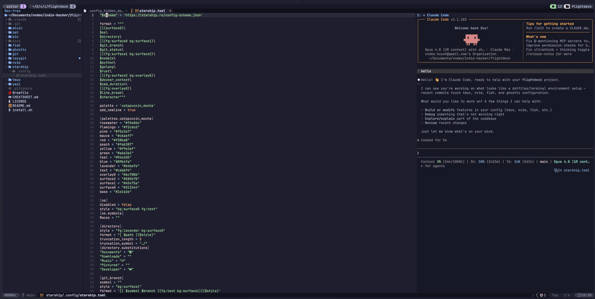
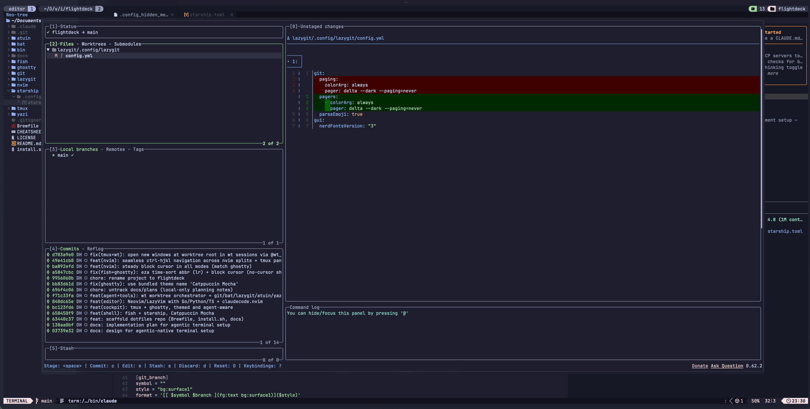
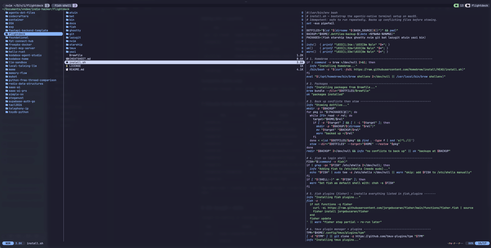
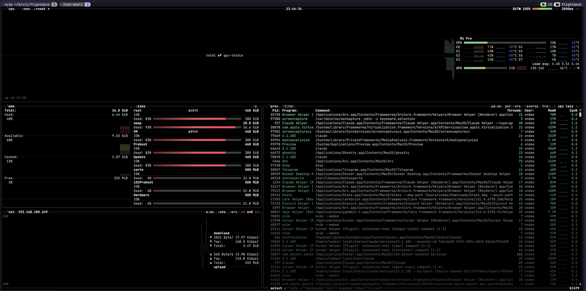

flightdeck✈︎
Your agentic cockpit in the terminal.
Ghostty · fish · tmux · Neovim (LazyVim) · Claude Code — a dotfiles setup where AI agents are first-class: run several Claude Code agents in parallel on isolated git worktrees, or drive one from inside Neovim. Themed Catppuccin Mocha, managed with GNU Stow.
❯ git clone https://github.com/vndee/flightdeck ~/flightdeck
❯ cd ~/flightdeck && ./install.sh # brew + stow + plugins




Modern tools, wired together.
Every layer is a fast, maintained CLI replacement — themed identically and stowed into place.
GPU-accelerated, native macOS, true-color — steady block cursor.
Inline abbreviations, a fast prompt, zoxide + atuin + fzf wired in.
The cockpit: sessions, panes, popups, fuzzy session switching.
Neo-tree, fzf-lua, treesitter — seamless tmux-pane navigation.
Parallel agents on isolated worktrees, plus claudecode.nvim in-editor.
fd, ripgrep, lazygit, btop, gh — sharper defaults for everything.
# one isolated agent per task — zero collisions ❯ wt my-feature # worktree + tmux (nvim + claude) ❯ wt another-fix # a second agent, in parallel ❯ wt ls # list worktrees & sessions # jump between them ❯ prefix T # fuzzy session switcher (sesh)
- ⌥Parallel by design. Each task gets its own checkout and tmux session, so 2–4 Claude Code agents run concurrently on separate branches.
- ⌘Agent in the editor. <leader>ac toggles Claude Code bound to Neovim — review and apply diffs natively.
- ⇄One grid. Ctrl-h/j/k/l flows seamlessly between Neovim splits and tmux panes.
Quick tips.
A handful of keys cover most of the day.